Snow
It lands on things.
Flakes fall in three layers. The far ones drift behind your windows and the near ones in front, so the desktop has depth instead of a flat sheet of dots.
The near ones settle. Snow builds up along the top of every window and on the ground, in drifts that slump when they get too steep. Drag a window and its snow slides off. Close one and the snow drops onto whatever is underneath.
- Wind that wanders, with the odd gust that blows spindrift off the piles
- Flakes swirl around the pointer when you wave it through them
- From a few flurries to a blizzard, with a dusting or deep drifts
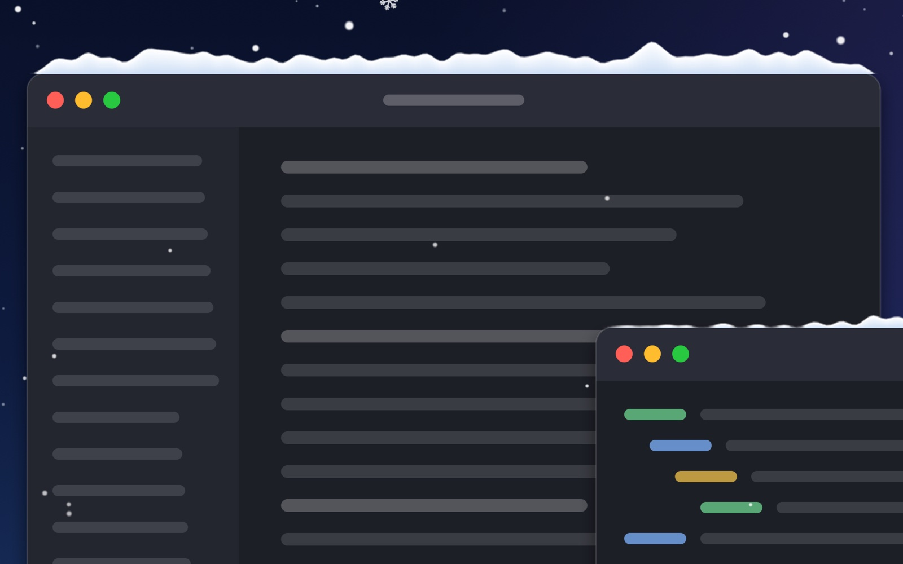
Lights
Hang them on every display.
Five kinds of bulb, eleven sets of colors and ten patterns, strung around each screen on the edges you choose. They sway a little when the wind picks up.

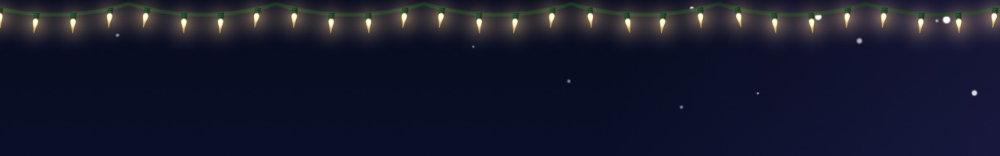
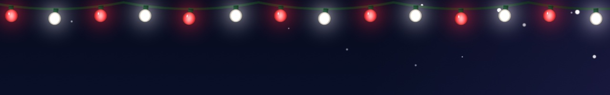

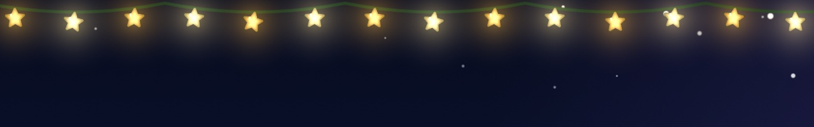
Patterns Steady · Twinkle · Chase · Wave · Breathe · Alternate · Sparkle · Meteor · Channel Fade · Showtime
Surprises
Then, now and then, something happens.
You choose how often: rarely, sometimes, often, or never. They come more often on Christmas Eve and Christmas Day.
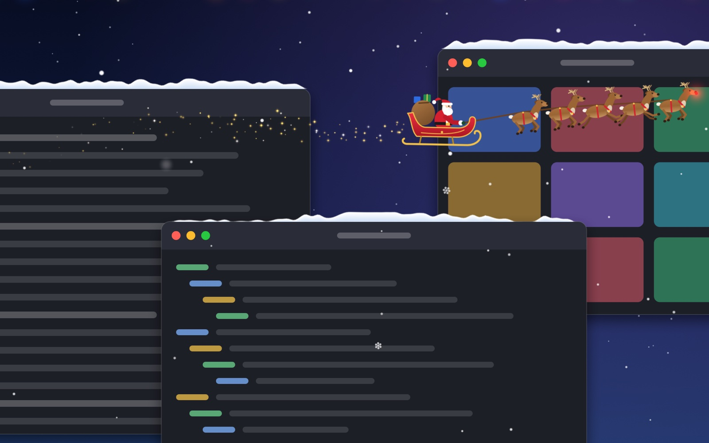
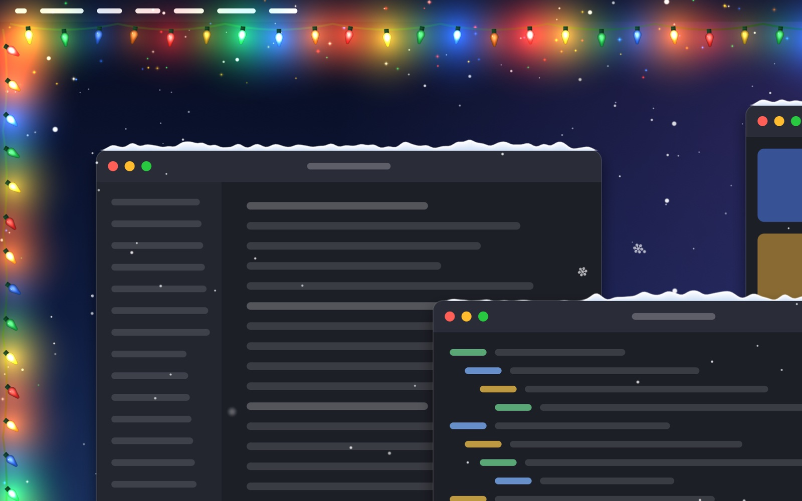
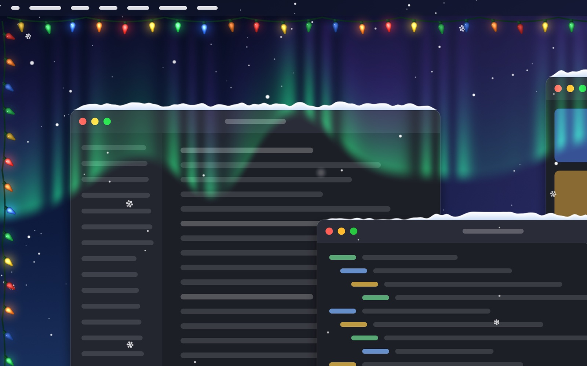

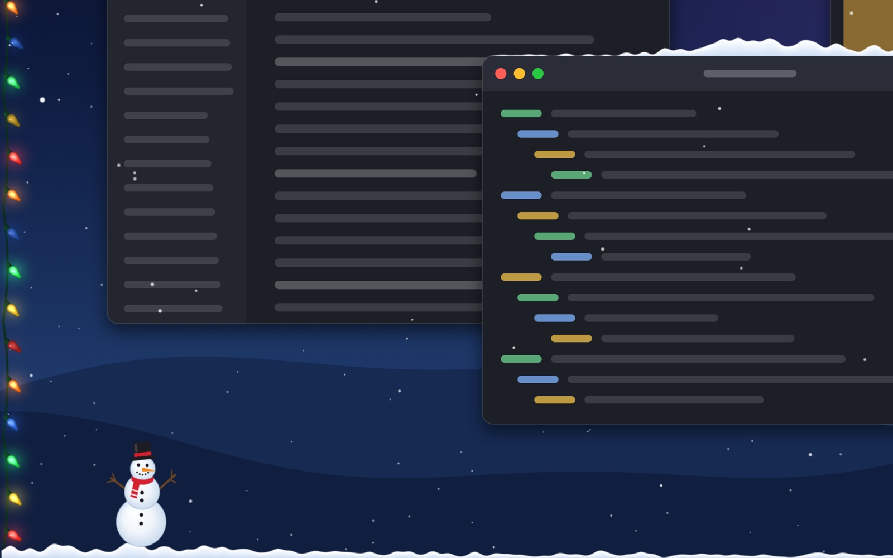
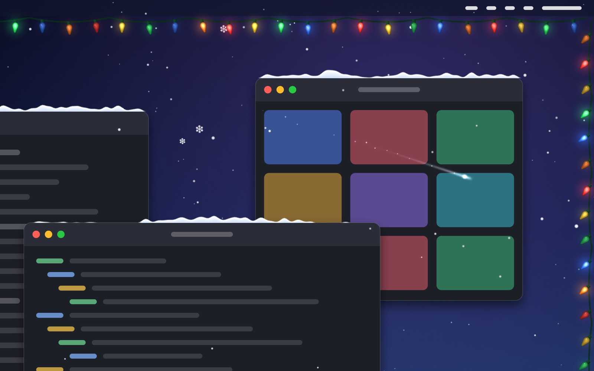
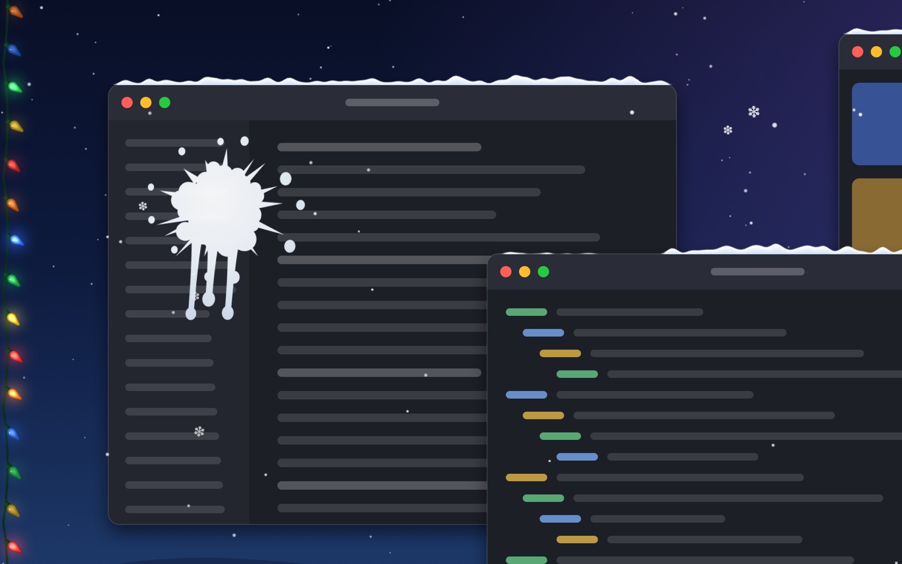
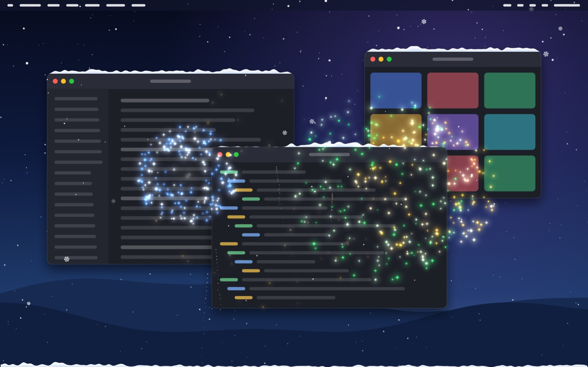
Also: gusts of wind that blow the snow right off your windows.
Polite about it
It decorates. It does not take over.
No permissions
Griswold asks macOS where your windows are. It never sees what is in them. No Screen Recording, no Accessibility, nothing to approve.
Easy on the battery
60 frames a second on power, 30 on battery or in Low Power Mode, fewer when only steady lights are showing. It stops drawing when the display sleeps or the screen locks.
Out of the way
Clicks pass straight through. It steps aside for full-screen apps, games and presentations unless you tell it not to.
Small and private
One small download. No account, no ads, no tracking. The only thing it ever fetches is a one-line file to see if there is a newer version, and you can switch that off.
Questions
Before you hang anything.
Is it really free?
Yes. No ads, no account, no in-app purchases, no trial.
Which Macs does it run on?
Any Mac on macOS 13 Ventura or later, Apple silicon or Intel. The download is signed with a Developer ID and notarized by Apple, so it opens without warnings.
How do I turn it off?
Click the snowflake in the menu bar. There is a switch at the top, and Quit at the bottom. Right-click the snowflake for a short menu.
Does it work with more than one display?
Yes. Each display gets its own snow and its own string of lights, and Santa flies across all of them. You can also keep it to the main display.
Will snow cover what I am working on?
Snow sits on top of windows, not over their contents, and the piles stay a few points tall. Distant flakes stay behind your windows by default. You can thin the snowfall, turn off settling, or switch the snow off and keep only the lights.
Does it make noise?
Not unless you ask. Sound is off by default. Turn it on and Santa brings sleigh bells.
Why Griswold?
After the patron saint of overdoing the exterior illumination.